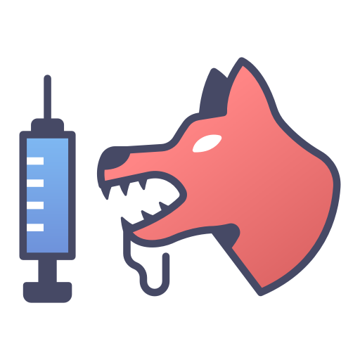

Paw
Care
.
Home
AboutUs
Cart
Hello User,
l
Log Out

Disease Identification.
Check your pet health.
Click here
PET CARE.
What kind of computer scientist are you?
Take this questionnaire to find out!
What gets you the most excited?
Experimenting, discovering, and learning
Helping others
Music, movies, games, and making others laugh
Taking risks
What is your ideal work environment?
Inside a high tech lab with lots of fancy equipment
Somewhere I feel appreciated for my work
Surrounded by cool gadgets and toys
Inside a cozy room or garage at home
Who are your role models?
People who make great discoveries
People who make sacrifices to help others
Creative, artistic, and expressive people
People who build innovative products
What do you do when you encounter a difficult problem?
Try to find the solution yourself (online, in a book, etc.)
Ask someone for help
Take a break, because it helps you be more creative
Jump in and try different solutions until one works
Submit Your Answers
Reset
Your result will show up here!